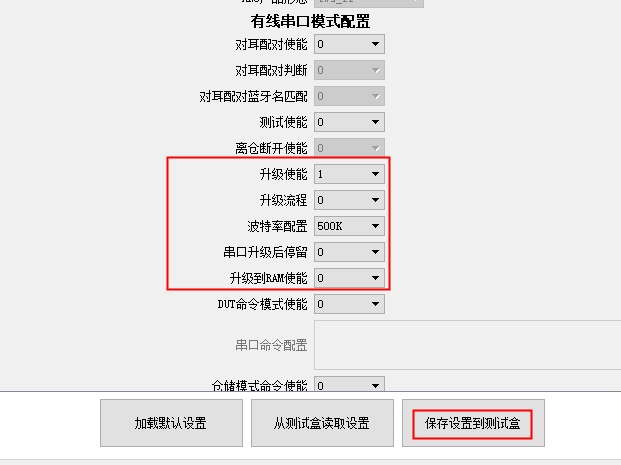
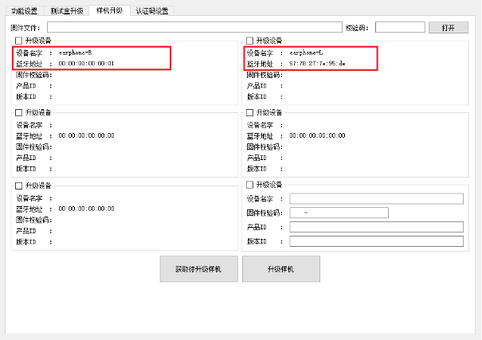

3.5. 蓝牙设备有线升级流程
3.5.1. 在线方式有线串口升级
使用条件
1.测试盒硬件版本为v2.2以上，且固件版本为v2.1.7以上,可以支持对耳测试接口。
2.对耳LDO引脚支持串口通讯（与串口IO合绑）且
LDOIN电容需小于103的样机，可以通过测试盒串口转接板与TWS样机连接。功能支持
支持测试盒插入TF卡升级模式双通道升级
支持测试盒pc模式选择左右耳升级
支持串口升级波特率可配(10K-2000K)（
V1.2.4增加10K\~100K支持）支持升级完毕后停留在升级界面或自动升级
Note
10K~100K需要对应sdk支持才可配置，100K~500K是常用波特率选项
与测试盒其他功能互斥说明
“对耳串口升级使能”和“对耳测试使能”不能同时使用，配置时候需要至少关闭一项。
在测试盒固件升级前，需要先关闭“对耳串口升级使能”，否则无法更新测试盒固件。
打开“对耳串口升级使能”，无法使用原来蓝牙无线升级功能（包括插卡升级及PC界面升级）。
使用说明
通过pc工具界面打开“对耳串口升级使能”；
并设置好合适的波特率，默认500,000；
“升级流程”和“升级到RAM使能”默认为0；
“串口升级后停留”来选择是否停留在升级界面；
点击“保存设置到测试盒”，重启测试盒进入串口升级模式。

通过PC界面串口升级
切换pc界面到“样机升级”界面，默认会显示左右耳的设备“earphone-L”和“earphone-R”，当左右耳设备在线的时候会显示对应样机的蓝牙地址，不在线设备蓝牙地址为0或1。
Note
当升级中断时，虽然耳机处于非在线状态（地址为0或1），仍可以指定左右耳进行升级。

通过插入TF卡串口升级
把升级文件(update.ufw)放到TF卡根目录下，插入测试盒。测试盒检测到耳机在线即开始升级，左右耳可同时串口升级。
3.5.2. 离线方式（使用TF卡）有线串口升级
如不想使用USB数据线线连接PC电脑进行在线方式有线升级.ufw文件，
可以参考《 蓝牙设备批量有线升级方法 》章节，通过将拷贝有升级文件（如*.bfu 或*.ufw）
的 TF 卡插入测试盒左侧 TF 卡座进行蓝牙设备固件升级。